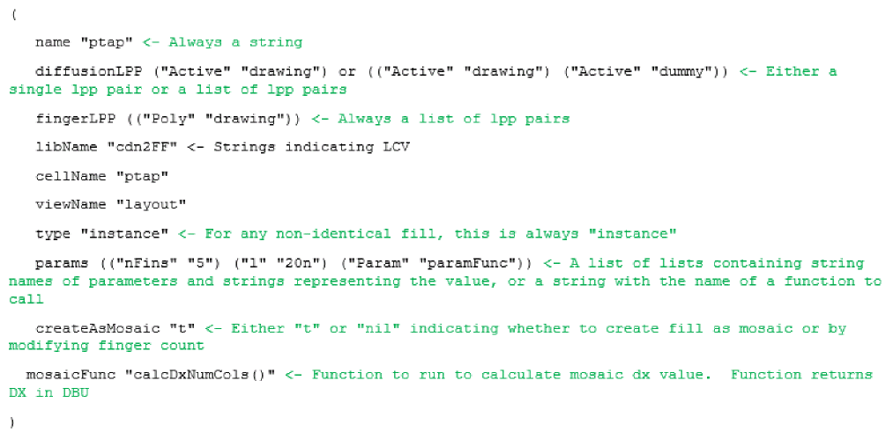

Fill Definitions for the Virtuoso Placer Flow
Fill definitions can be created by defining and registering a SKILL procedure. A fill definition can specify the master to be used for the fill devices and set parameters on those devices.
The fill definition
diffusionLPP parameter can be either a single layer-purpose pair or a list of layer-purpose pairs. The fill definition fingerLPP parameter is always a list of layer-purpose pairs.Here is an example of a SKILL procedure:

Use the following SKILL functions to register the SKILL procedures:
- lobRegisterAdjacentFillDefsProc: Registers the specified user function symbol as the adjacent fill definition procedure.
- lobRegisterTransitionFillDefsProc: Registers the specified user function symbol as the transition fill definition procedure.
- lobRegUserProc: Registers a user-defined function for a specific purpose, as needed by layout objects. This function is currently used to register procedures to retrieve adjacent fill definitions.
Use the following SKILL functions to retrieve names of registered procedures:
- lobGetRegisteredAdjacentFillDefsProc: Returns the name of the function that is registered as the adjacent fill definition procedure.
- lobGetRegisteredTransitionFillDefsProc: Returns the name of the function that is registered as the transition fill definition procedure.
- lobGetRegUserProc: Returns a list of strings that contain the name of the specified registered user procedure.
Use the following SKILL functions to unregister procedures:
- lobUnRegisterAdjacentFillDefsProc: Unregisters the specified user function symbol, which is currently registered as the adjacent fill definition procedure.
- lobUnRegisterTransitionFillDefsProc: Unregisters the specified user function symbol, which is currently registered as the transition fill definition procedure.
- lobUnRegUserProc: Accepts user functions based on keyword and unregisters them.
Related Topics
Base Layer and Dummy Fill Insertion
Base Layer and Dummy Fill Insertion
Return to top